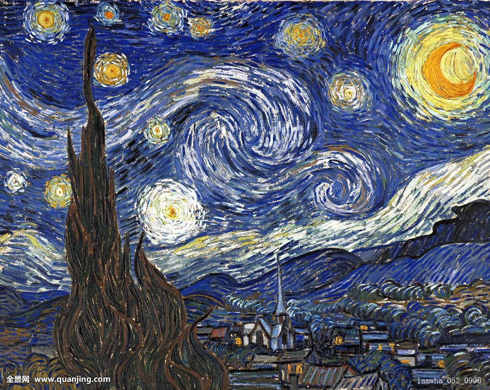
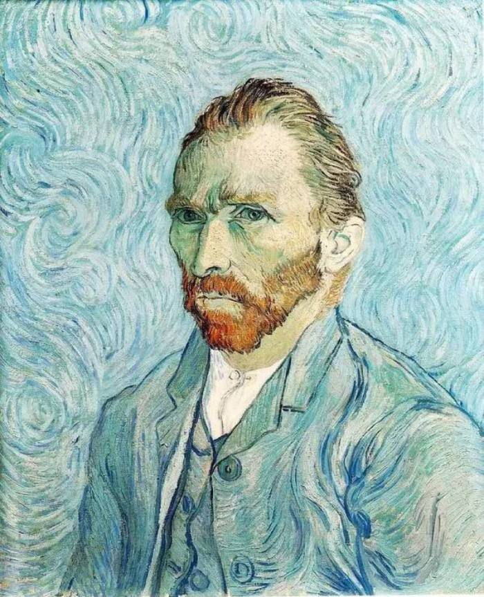
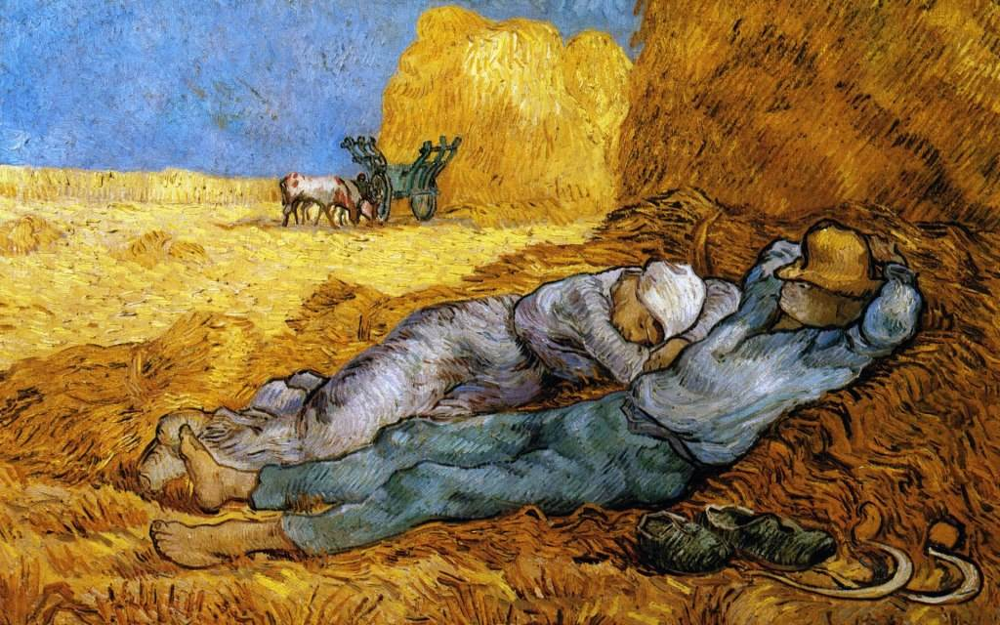
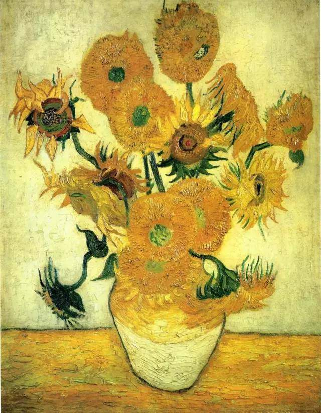

- 
星月夜（油画）
星月夜》（The Starry Night）是梵高的代表作之一，现藏纽约现代艺术博物馆。在这幅画中，梵高用夸张的手法，生动地描绘了充满运动和变化的星空。整个画面被一股汹涌、动荡的蓝绿色激流所吞噬，旋转、躁动、卷曲的星云使夜空变得异常活跃，脱离现实的景象反映出梵·高躁动不安的情感和疯狂的幻觉世界。
- 
最后一张自画像
这是梵高1888年早期在巴黎画的最后一张自画像，他自己把它称为“死亡之脸”，并在一封信中这样写道：“透过这张面对镜子画的自画像我得到了一个关于自己的概念:桃灰色的脸上长者一双绿眼，死灰的头发，额前与嘴满是皱纹，呆僵木讷，非常红的胡子，被忽略而且充满哀伤。”
- 
午睡（布面油画）
《午睡》是梵高临摹的法国第一位伟大的风景画家米勒的作品，是向大师的致敬。米勒是法国最伟大的田园画家，一位现实主义大师。梵高一向对米勒推崇备至，他对米勒的敬仰终生未改。梵高像米勒一样关注世人疾苦，内心蕴藏着深厚的爱，并借助作品来传达爱。梵高对米勒画作的临摹和再创作，人们能够体会到二者对同一主题的不同理解和不同表现手法，也能看出两种绘画风格的鲜明对照。从两两对应的作品中，既可以领略梵高是如何将米勒的简练、朴素、凝重演绎成梵高的色彩鲜明、生气勃勃、狂野奔放。
- 
向日葵（布面油画）
梵高用简练的笔法表现出植物形貌，充满了律动感及生命力。整幅画仍维持一贯的黄色调，只是较为轻亮。这幅画被认为是梵高在黄房子里面的最后一幅大型《向日葵》。在这幅作品中,再也看不到自画像里那种短促而笔触,在这里,他的笔触坚实有力,大胆恣肆,把向日葵绚丽的光泽、饱满的轮廓描绘得淋漓尽致。他大胆地使用最强烈的色彩,因为他清楚地知道："岁月将使它们变得暗淡,甚至过于暗淡。"尽管采取了种种保护措施,这些色彩仍然消褪了原有的光泽。《向日葵》打破陈规，强烈的对比颜色和厚重的色块结合得天衣无缝，更创造出新的对比色系，对往后的艺术发展产生深远的影响。